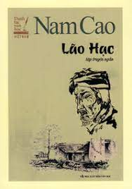
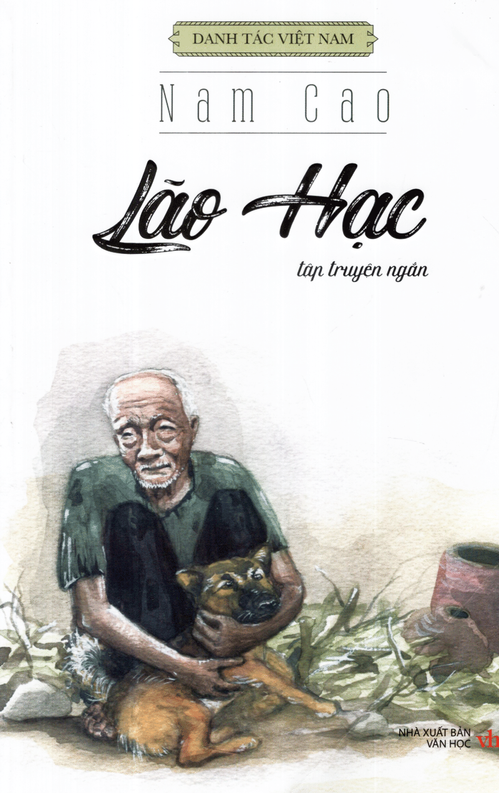
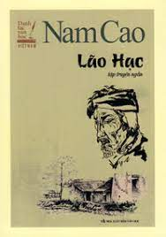
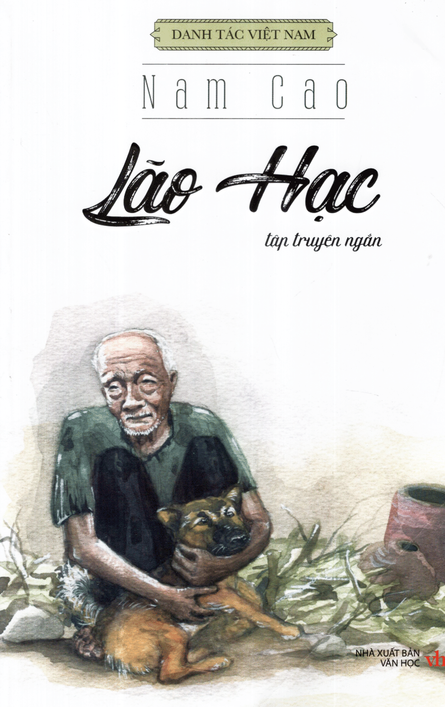

Book Price
$18.25
Lao Hac
"Lão Hạc" is a short story by Vietnamese writer Nam Cao,
written in 1943. The work is considered one of the representative
short stories of the realistic literature genre, depicting the social
situation in Vietnam during the period before the August Revolution.
Lão Hạc is a simple and kind-hearted farmer.
His wife passed away early, and he has a son,
but due to extreme poverty, he cannot find a wife for his son.
Later, the girl that his son deeply loves marries the son of a rich deputy,
who leaves their village to work in a rubber plantation as a contract laborer.
Lão Hạc constantly worries and thinks about his son's future.
He makes a living by gardening on a piece of land
that his late wife had worked hard to buy and leave for their son.
Lão Hạc has a dog named Vàng,
a dog left behind by his son before he went
to work on the rubber plantation.
Lão Hạc treats Vàng as a family member,
calling him "cậu Vàng" because he truly cherishes and loves him deeply.
However, due to their impoverished circumstances and a severe illness,
Lão Hạc becomes weak and unable to take care of himself,
let alone another mouth to feed, including a dog.
In order to keep the land for his son,
Lão Hạc reluctantly decides to sell "cậu Vàng".
He feels guilty for "betraying a dog".
Lão Hạc cries a lot to ông giáo (a close neighbor and also a poor intellectual)
about this decision. But since then, Lão Hạc lives in seclusion, quietly alone.
After selling all his possessions
and asking ông giáo to take care of his funeral arrangements,
Lão Hạc ends his life with a lethal dose of poison from Binh Tư.
When hearing about Lão Hạc's request for poison,
ông giáo misunderstands and feels somewhat disappointed in the kind-hearted man.
However, witnessing the brutal and painful death of Lão Hạc,
ông giáo finally understands everything:
"Lão Hạc! Please rest in peace and close your eyes! Don't worry about your garden.
I will take care of it for you. When your son returns,
I will give it back to him and tell him,
'This is the garden that your father has left for you intact:
he would rather die than sell a single square meter...'"